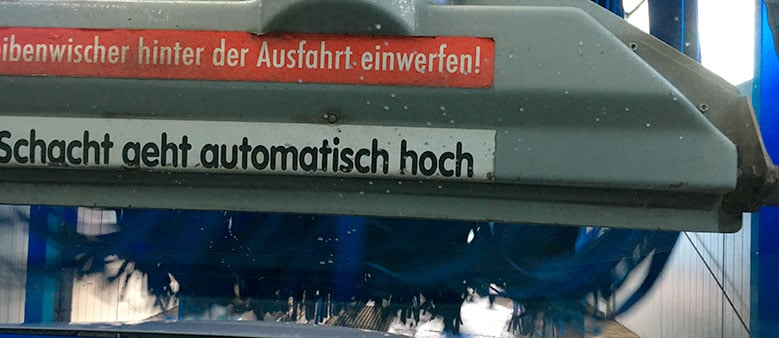

Ratgeber · Standort Frankfurt
12 Regeln in der Waschanlage Frankfurt
Damit Ihre Wäsche bei TOPWASH Frankfurt-Eckenheim reibungslos abläuft, gelten dieselben 12 Regeln wie an allen unseren Standorten in Rhein-Main – aus unseren Einfahrt-Hinweisen. Ein Blick vor der Einfahrt spart Zeit und schützt Ihr Fahrzeug.

1. Scheibenwischer ausschalten
Ein aktivierter Wischer kann in der Anlage gegen Bürsten oder Textillamellen schlagen und den Wischerarm verbiegen oder die Scheibe zerkratzen.
2. Regensensor deaktivieren
Ein aktiver Regensensor kann das einlaufende Wasser als Regen deuten und die Wischer unerwartet einschalten – am besten direkt mit ausschalten.
3. ALLE Fahrassistenzsysteme deaktivieren
Spurhalte-, Abstands- oder Notbremsassistenten können die Anlage als Hindernis fehlinterpretieren und ungewollt eingreifen – vor der Einfahrt vollständig ausschalten.
4. Antenne UNBEDINGT entfernen oder einfahren
Aufgesetzte Stabantennen können abbrechen oder Textillamellen beschädigen – wenn möglich einfahren, sonst vor der Wäsche demontieren.
5. Tankklappe verschließen
Eine offene oder nicht fest eingerastete Tankklappe kann durch den Wasserdruck der Anlage aufgedrückt werden.
6. Dachträger, Skihalter etc. entfernen
Aufbauten auf dem Dach kollidieren mit Teilen der Waschanlage und können sowohl das Fahrzeug als auch die Anlage beschädigen.
7. Außenspiegel einklappen falls nötig
Bei manuell einklappbaren Spiegeln senkt das Einklappen das Risiko, dass sie von Bürsten oder Lamellen erfasst werden.
8. Fenster und Schiebedach geschlossen halten
Offene Fenster oder ein geöffnetes Schiebedach lassen Wasser und Reinigungsmittel direkt ins Fahrzeuginnere.
9. Gang raus bzw. Wahlhebel auf „N" stellen
Nur so kann die Anlage das Fahrzeug frei durch den Waschtunnel ziehen, ohne gegen den eingelegten Gang zu arbeiten.
10. Handbremse lösen, nicht bremsen
Eine angezogene Handbremse blockiert die Räder und verhindert den Transport durch die Anlage; während der Durchfahrt selbst nicht bremsen.
11. Lenkrad nicht festhalten
Die Anlage führt das Fahrzeug über die eigene Spurführung; Gegenhalten am Lenkrad kann diese Führung stören.
12. Motor bitte nicht ausmachen
Ein abgestellter Motor kann Lenkung und Bordelektrik beeinträchtigen – den Motor während der gesamten Durchfahrt laufen lassen, sofern das Personal nichts anderes ansagt.
Sie finden TOPWASH Frankfurt in der Karl-von-Drais-Str. 15, 60435 Frankfurt-Eckenheim, geöffnet Mo–Fr 08:00–19:00 und Sa 08:00–18:00 Uhr. Adresse, Route & Öffnungszeiten ansehen → Die vollständige, für alle Standorte geltende Checkliste inklusive Vorschadenmeldung finden Sie außerdem auf der Startseite sowie in unseren AGB, § 3 Mitwirkungspflichten des Kunden.